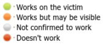

Browser Exploitation (BeEF)
Browser Exploitation Framework (BeEF)
By
Wade Alcornsite:
https://beefproject.com/GitHub:
https://github.com/beefproject/beefExploiting XSS to
gain control of, or hook, browsers becomes vastly simpler and more impactful with
BeEF.
InstallOn kali install it with:
root@kali:/# apt install beef-xss
root@kali:/# beef-xss
gitHub install:
root@kali:/# git clone https://github.com/beefproject/beef.git
root@kali:/# cd beef
root@kali:/# ./install
root@kali:/# bundle install
Configuration•
Default username
and password are in
config.yaml
(beef:beef). It is recommend change both the username and password to something non-standard and strong.
•
permitted_ui_subnet: configure it to accept connections only from
the local machine (0.0.0.0/0). Otherwise it will allow other people to use our Beef to manage our victim!
•
permitted_hooking_subnet: • We need to set the host IP of our
Server(attacker machine) where the hacked browser will connect back to. In my case I’m going to set the host
to.
◇ port: this is the listening port, is good practice to set up the port 80 or 443. Because most of
corporate victim firewall enforce policies for outbound ports
Run itYou must run it as root
The two important bits of
information are:
◇
Hook URL: http://[ipAddress]:3000/hook.js
▪ is the Javascript you
need to try and get your victim to run. You could look at something advanced like XSS but really the scary thing is
any page you browse could just include this in the script tags to allow full access to your machine!
◇
UI URL: http://[ipAddress]:3000/ui/panel
▪ is the GUI for BeEF and where we’ll be able to
monitor and carry out the attack once an unsuspecting browser
connects.
Interface• left side: menu options and the list of zombies under
this attacker's control
◇ Zombies a re listed as offline or online, if offline, commands are sent when the
browser reconnects
• right side: command you want to run and the results from this command
◇ list of
modules available. Each module is color-coded based on the zombie selected. This color coding signifies the
reliability and functionality of the module against that target

Modules
• Clipboard Stealing
•
History Browsing: ◇ sends a list of URLs to the
zombie and then returns if that client has accessed them. This capability enables us to fingerprint the victims, map
their infrastructure, and determine potential sites to use in other attacks.
•
Request
Initiation: ◇ directs the zombie to request a page. This could be used to download software to the
machine. It could also be used to send the client to a specific site, either to click ads for revenue or to perform
a DoS attack by overwhelming the web server with requests.
•
Port Scanning: ◇ can
conduct network port scans using distributed zombies. This means that with enough zombies, the attacker could have
each one request a single port. What IDS is tuned to catch that?
•
Browser Exploits: ◇
BeEF supports the integration with Metasploit but requires a running copy of Metasploit. he BeEF controller connects
to Metasploit via an RPC connection and loads the available exploits and payloads.
•
Interprotocol
Exploitation:
◇ BeEF enables exploitation across protocols